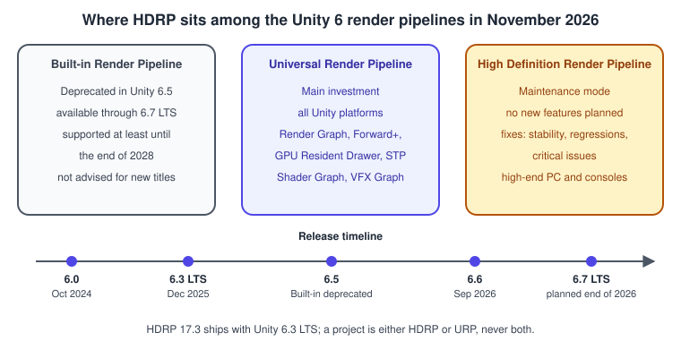
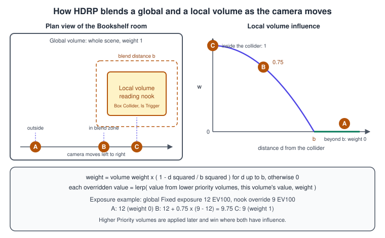
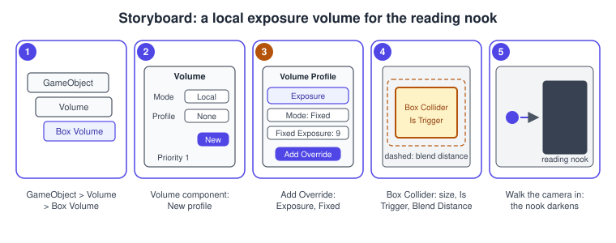
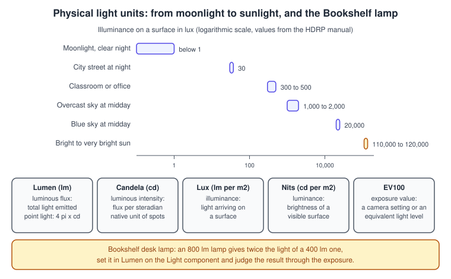

HDRP Overview
|
This content was generated with the assistance of AI and should be verified against the official documentation before being relied on in production. |
The High Definition Render Pipeline (HDRP) is Unity’s pipeline for photorealistic, high-fidelity rendering on high-end hardware: physical light units, a physically based sky, volumetric fog, subsurface scattering, hair and eye materials, ray tracing and a path tracer. It has been in maintenance mode since Unity 6: Unity fixes defects but plans no new features, and puts its investment in the Universal Render Pipeline (URP). This page explains where HDRP stands in November 2026, when it is still the right choice, how a project is set up, and the two ideas that make HDRP different to work with: the Volume framework and physical light units. The running example stays on URP; an HDRP variant of the Bookshelf, with the desk lamp in lumens and a reading nook that has its own exposure, is used here to show the concepts.
The facts were checked in November 2026 against the Unity 6.3 LTS manual (6000.3) and the HDRP package version 17.3 that ships with it. Where Unity 6.4, 6.5 or 6.6 changed something, the text says so. HDRP requires compute shaders and does not run on OpenGL or OpenGL ES; its reference platforms are DirectX 11 and 12, Metal, Vulkan and consoles. The general pipeline theory is in The Rendering Pipeline, light and shadow theory in Lighting and Shading Models and Shadows and Global Illumination, and the choice between pipelines in Render Pipelines Overview.
Where HDRP stands

Unity’s render pipeline strategy for 2026 sets the direction:
-
URP is the focus of new investment: performance, build times, stability, extensibility and lighting. Planned visual features include real-time global illumination, screen space reflections, physical light units, auto exposure, a physical sky and on-tile post-processing for mobile.
-
HDRP is in maintenance. Unity states that no new features are planned; fixes go to stability, regressions and critical issues in widely used features. Unity is bringing HDRP support to Nintendo Switch 2 and planned to release it to all Nintendo developers in Unity 6.5.
-
The Built-in Render Pipeline is deprecated in Unity 6.5. It remains available through Unity 6.7 LTS and is supported at least until the end of 2028, but Unity does not recommend it for new titles.
Unity 6.3 also made URP and HDRP share the same Render Graph compiler and API, which prepares unified extensibility; the practical effect for an HDRP project is stability and tuning work rather than new rendering features.
When HDRP still fits
The Unity manual describes HDRP as the pipeline for projects that need photorealism and high-fidelity rendering on high-end platforms, with 3D content only. Its platform support is desktop, Xbox and PlayStation, with a focus on efficient use of advanced GPU hardware such as async compute and ray tracing. URP targets rendering scalability across all platforms, including tile-based GPUs and untethered VR, and both 2D and 3D. A project can use only one of them: HDRP projects are not compatible with URP or the Built-in pipeline, and switching late is slow because shaders, lights and settings differ.
| Project need | Pipeline | Why |
|---|---|---|
photorealistic 3D for PC and consoles, a visualization or an architectural walkthrough |
HDRP |
physical light units, physically based sky and fog, volumetric lighting, subsurface scattering, water, ray-traced effects and path tracing |
an existing HDRP project close to release |
HDRP |
it is supported and receives fixes; a late migration costs more than the missing new features |
mobile, Web, Quest or any platform without compute shaders |
URP |
HDRP does not run there |
2D, stylized or cel-shaded looks, custom lighting models |
URP |
easier to customize; Unity 6.3 adds custom lighting to Shader Graph on the URP Unlit target |
a new project that must run on a wide range of platforms and keep receiving features |
URP |
it is the pipeline that gets the investment |
consoles only?"} B -->|"no"| U["URP"] B -->|"yes"| C{"Needs HDRP-only features:
ray tracing, path tracing,
physical sky, hair, water?"} C -->|"no"| U C -->|"yes"| D{"Accepts maintenance mode:
fixes, no new features?"} D -->|"yes"| H["HDRP"] D -->|"no"| U
Platforms and hardware
HDRP runs on devices that support compute shaders and use DirectX 12, DirectX 11, Metal or Vulkan, and on consoles (see the platform-specific documentation for which). It does not support OpenGL or OpenGL ES, and on Linux it needs Vulkan to be installed. It is compatible with VR and optimized for single-pass rendering. Camera-relative rendering renders far-away objects with large world coordinates in a more numerically stable way than the Built-in pipeline.
Ray tracing needs hardware support: the manual lists NVIDIA RTX GPUs and AMD RX 6000 series GPUs, a fallback on some previous NVIDIA generations, and specific consoles; SystemInfo.supportsRayTracing tells a script whether the current system supports it. HDRP’s path tracing works only on platforms that use DirectX 12 and does not support several features of the rasterized pipeline: among them local volumetric fog, tessellation, water, volumetric clouds, MSAA, per-pixel displacement, the Eye and Hair materials, Graphics.DrawMesh and vertex animation. A mesh whose material lacks the HDRenderPipeline tag does not appear in a path-traced scene.
Source: HDRP: Features overview
Source: HDRP: Path tracing limitations
Setting up an HDRP project
There are two ways to start. The first is the template: in the Unity Hub choose New Project, open the Sample tab, select 3D Sample Scene (HDRP), name the project and create it. Unity installs the HDRP package and its dependencies and opens a scene with several physically based lighting setups and examples of decals, volumes and materials. The second is to add the High Definition RP package to an existing project through the Package Manager and then run the HDRP Wizard (Window > Rendering > HDRP Wizard), which checks the configuration (color space, graphics API, the HDRP asset, default resources) and fixes each failing test with one button. The wizard also has VR and DXR (ray tracing) tabs.
Three assets control a project:
| Asset | What it controls |
|---|---|
HDRP Asset |
the global rendering settings and the instance of the pipeline. Unity only allocates memory and builds shader variants for the features you enable, so turn off what the project does not use. Examples: Color Buffer Format (R11G11B10 or R16G16B16A16, which doubles memory but avoids banding), Lit Shader Mode (Forward Only, Deferred Only or Both, a smaller choice builds faster and uses less shader memory), MSAA quality, motion vectors, Runtime Debug Display |
Frame Settings |
per-camera and per-reflection-probe switches that enable or disable features at run time, within what the HDRP Asset enabled; the defaults are set in the HDRP Graphics settings and a camera can override them with Custom Frame Settings |
Default Volume Profile |
the project-wide default values of every Volume Override, in Project Settings > Graphics > HDRP > Default Volume Profile |
Features that need shader variants (for example a lit shader mode) can only be changed at edit time in the HDRP Asset; Frame Settings toggle rendering of a feature at run time but cannot enable a feature that the asset disabled.
Source: HDRP: Install HDRP
Source: HDRP: Frame Settings
Volumes
In HDRP most of the look of a scene (sky, fog, exposure, tone mapping, bloom, depth of field, shadows and more) is not set on the camera or the light but in a Volume. A Volume lets you partition the scene into areas and control the lighting and effects according to the position of the camera relative to each volume, instead of tuning the whole scene at once. The same framework is used by URP post-processing, but HDRP relies on it for most of its settings.
The pieces
-
A Volume component can be added to any GameObject, several to one GameObject, and a scene can contain many.
-
A Volume references a Volume Profile, an asset that holds one or more Volume Overrides. Each override controls one effect (Visual Environment, Physically Based Sky, Fog, Exposure, Tonemapping, Bloom…). Inside an override each parameter has an override state: when it is off the parameter keeps the value from lower-priority volumes, when it is on the volume contributes its value.
-
A Volume is Global (it affects every camera, everywhere) or Local (it affects a camera that is near the bounds of the Collider on the same GameObject, which must be a trigger).
-
Properties of the component: Mode (Global or Local), Weight (an overall opacity from 0 to 1), Priority (higher priority volumes are applied later and win), Blend Distance (local volumes, the distance from the collider over which the volume fades in), and the Profile.
-
Every HDRP scene has two default volumes with the lowest priority, so any volume you add overrides them: the Default Volume of the whole project (the profile in the Graphics settings,
DefaultSettingsVolumeProfileby default) and the global volume of the active quality level (the profile in the HDRP Asset).
Menu GameObject > Volume creates a Global Volume, a Sky and Fog Global Volume (a global volume with Visual Environment, Physically Based Sky, Fog and Exposure overrides), a Box Volume, a Sphere Volume or a Convex Mesh Volume; each with a profile attached. A profile can also be created in the Project window with Create > Rendering > Volume Profile.
Source: HDRP: Understand Volumes
Source: HDRP: Create a Volume Profile
How volumes blend
At run time HDRP goes through all enabled volumes with a profile and a weight above zero, sorted by priority, for each camera. A global volume contributes with its weight. A local volume measures the distance \( d \) from the camera to the closest point of its colliders (zero when the camera is inside) and contributes only when \( d \) does not exceed the blend distance \( b \). Its influence falls from 1 at the collider to 0 at the blend distance:
\[ w = \text{ weight } \cdot \left( 1 - \frac{ d^{ 2 } }{ b^{ 2 } } \right) \qquad ( 0 \le d \le b ) \]
When the blend distance is zero, the volume applies fully inside its collider and not at all outside. Each overridden parameter is then interpolated between the value accumulated from the lower-priority volumes and the volume’s own value with factor \( w \). The camera used for the test is the volume trigger, normally the camera itself; the HDRP camera data has a Volume Layer Mask (which volume layers affect it) and a Volume Anchor Override (a Transform used instead of the camera position).

For the Bookshelf, the global volume holds a daylight exposure (fixed at 12 EV100 for the example) and the nook volume overrides it with 9 EV100. Position A is outside the blend distance and keeps 12. At B the camera is halfway to the collider, \( d = b / 2 \), so \( w = 0.75 \) and the exposure is \( 12 + 0.75 \cdot ( 9 - 12 ) = 9.75 \). At C the camera is inside and sees 9.
Source: Core RP Library: Volume
A local exposure volume, step by step
-
Create the volume with GameObject > Volume > Box Volume. Name it
ReadingNook. -
In the Volume component, check that Mode is Local and select New next to Profile to create a Volume Profile. Set Priority to a value above the global volume’s, for example 1.
-
In the Inspector select Add Override and choose Exposure. Enable Mode and set it to Fixed, enable Fixed Exposure and set it to 9.
-
In the Box Collider component adjust Center and Size so the box covers the nook, and make sure Is Trigger is enabled. Set Blend Distance in the Volume component to about 1.5 meters, the distance over which the exposure changes as the camera walks in.
-
Enter Play mode and walk the camera into the nook. The scene darkens smoothly as the camera crosses the blend zone. If nothing changes, check the priority, the collider and that the camera’s Volume Layer Mask includes the volume’s layer.

Source: HDRP: Set up a Volume
Source: HDRP: Control exposure
Volumes from C#
The Volume API follows the same model: you retrieve the profile, find or add an override, and set overrideState and value of the parameters you change. There are two ways to reach a profile. Volume.sharedProfile is the asset itself: a change affects every volume that uses it and does not reset when you leave Play mode. Volume.profile returns a private copy, created on first access: a change affects only this volume and is lost when you exit Play mode, and you must destroy the copy when you no longer need it. The script below owns its profile, sets the exposure override in code and fades the volume with its weight.
using UnityEngine;
using UnityEngine.Rendering;
using UnityEngine.Rendering.HighDefinition;
namespace Bookshelf.Hdrp
{
/// <summary>A local volume that fades in a fixed exposure while the player is reading in the nook.</summary>
[RequireComponent(typeof(Volume))]
public sealed class ReadingNookVolume : MonoBehaviour
{
[SerializeField, Range(-4f, 16f)] float fixedExposureEv100 = 9f;
[SerializeField, Min(0.01f)] float fadeSeconds = 0.5f;
Volume volume;
float targetWeight;
void Awake()
{
volume = GetComponent<Volume>();
volume.isGlobal = false; // a local volume also needs a trigger Collider on this GameObject
volume.priority = 1f;
// Volume.profile returns a private copy of the shared profile, so edits stay on this volume.
VolumeProfile profile = volume.profile;
if (!profile.TryGet(out Exposure exposure))
{
exposure = profile.Add<Exposure>(false);
}
exposure.mode.Override(ExposureMode.Fixed);
exposure.fixedExposure.Override(fixedExposureEv100);
volume.weight = 0f;
targetWeight = 0f;
}
public void SetReading(bool reading)
{
targetWeight = reading ? 1f : 0f;
}
void Update()
{
volume.weight = Mathf.MoveTowards(volume.weight, targetWeight, Time.deltaTime / fadeSeconds);
}
void OnDestroy()
{
// The copy created by Volume.profile is ours to destroy.
if (volume != null && volume.HasInstantiatedProfile())
{
Destroy(volume.profile);
}
}
}
}Source: HDRP: Volume Scripting API
Source: HDRP: Exposure class
A trap in the other direction: the default volume and the quality level volume are cached, so a script that changes the values of the profile assigned as Default Volume Profile or Quality Volume Profile has no effect. Either create a global volume in the scene and override the property there (scene volumes are not cached), or call VolumeManager.instance.OnVolumeProfileChanged(profile) after the change, which recomputes the cache and costs performance, so use it sparingly.
Source: HDRP: Troubleshooting volumes
Physical light units and exposure
HDRP lights in units that come from real measurements, the numbers on a light bulb package or a photographer’s light meter. This is the biggest change from the Built-in pipeline, where intensity is an arbitrary multiplier. For the units to behave, one Unity unit must equal one meter.

| Unit | Meaning |
|---|---|
Candela (cd) |
luminous intensity, the base SI unit; a wax candle gives roughly 1 cd |
Lumen (lm) |
luminous flux, the total visible light emitted in all directions. With lumens the brightness of the scene does not change with the size of the light source, but its highlights dim as the source grows, because the same power spreads over a larger area |
Lux (lm per square meter) |
illuminance, the light that reaches a surface; directional lights use it (the physically based sky expects a sun of 130,000 lux for physically correct results) |
Nits (cd per square meter) |
luminance, the surface brightness of a source; the scene brightness depends on the size of the source, but its highlights keep their intensity |
EV100 |
exposure value for ISO 100; HDRP expresses all exposure values in EV100, and lights can use EV100 as their unit |
For a point or spot light of luminous intensity \( I \) (in candela) that radiates into a solid angle \( \Omega \) (in steradians), the flux is \( \Phi = I \, \Omega \), which is \( 4 \pi I \) for a point light radiating in every direction. Directional lights use lux; all other light types can use lumen, candela, EV or simulate lux at a distance.
Because lights are in absolute units, the camera must expose them. Exposure is a Volume override with the modes Fixed, Automatic, Automatic Histogram, Curve Mapping and Use Physical Camera, plus a compensation; the example above used Fixed. A scene that looks black or white is nearly always an exposure problem, not a light problem; the Rendering Debugger has exposure debug modes.
Setting the desk lamp in lumens
HDRP extends the Light component with an HDAdditionalLightData component; it is added automatically in the editor, which is why you cannot create an HDRP light at run time with a plain AddComponent<Light>: use the AddHDLight extension method, or instantiate a prefab, which is also cheaper. The intensity is set through the Light component’s lightUnit and the conversion helper LightUnitUtils:
using UnityEngine;
using UnityEngine.Rendering;
namespace Bookshelf.Hdrp
{
/// <summary>Sets the Bookshelf desk lamp in lumens, whatever the native unit of its light type.</summary>
[RequireComponent(typeof(Light))]
public sealed class DeskLampLumens : MonoBehaviour
{
[SerializeField, Min(0f)] float lumens = 800f;
Light lamp;
void OnEnable()
{
lamp = GetComponent<Light>();
Apply();
}
void OnValidate()
{
if (lamp != null)
{
Apply();
}
}
public void Apply()
{
// Show the intensity in lumens, and store it in the native unit of the light type.
lamp.lightUnit = LightUnit.Lumen;
LightUnit nativeUnit = LightUnitUtils.GetNativeLightUnit(lamp.type);
lamp.intensity = LightUnitUtils.ConvertIntensity(lamp, lumens, LightUnit.Lumen, nativeUnit);
}
}
}Source: Core RP Library: LightUnitUtils
Source: Scripting API: LightUnit
What HDRP offers
A map of the main feature areas, so you know what to look for in the manual:
| Area | Features |
|---|---|
Lighting |
physical light units, IES profiles, light anchors, rendering layers, shadowmasks, contact and micro shadows, Adaptive Probe Volumes (with sky occlusion for dynamic time of day), screen space global illumination, reflection probes and screen space reflections |
Environment |
Visual Environment, gradient, HDRI and physically based sky, Cloud Layer and volumetric clouds, exponential and volumetric fog with local fog volumes, the water system |
Materials |
Lit, Layered Lit, subsurface scattering for skin, hair and fur, eyes, fabric, decals, refraction and transparent materials with several models, Shader Graph targets for all of them |
Camera |
a built-in post-processing stack driven by volumes (tonemapping, bloom, depth of field and more), camera-relative rendering, dynamic resolution with upscalers (the manual lists Catmull-Rom, AMD FSR, DLSS and TAA upscaling; HDRP 17 adds Spatial-Temporal Post-Processing on all platforms) |
Ray tracing |
ray-traced ambient occlusion, contact shadows, shadows, reflections, global illumination, subsurface scattering, recursive rendering, and a path tracer |
The Visual Effect Graph is installed with HDRP and can use its color and depth buffers and lit outputs; see Particles and VFX Graph. Shader Graph supports the HDRP target; see Shader Graph and HLSL.
Source: HDRP: Features overview
Converting a Built-in project
HDRP uses its own shaders and physical light units, both incompatible with the Built-in pipeline. The conversion has four parts: add the HDRP package and run the Wizard; convert post-processing (remove the Post-Processing Version 2 package and use HDRP’s volume-based stack); convert the lighting to physical units (add a Sky and Fog Global Volume, set sun intensity in lux and use Exposure); convert materials and shaders, automatically with the Render Pipeline Converter or manually. Since Unity 6.4 the Render Pipeline Converter can also convert shaders from a Built-in project to HDRP. The reverse is rarely worth doing: moving from HDRP to URP means rebuilding materials, lights and volumes.
Common mistakes
-
Choosing HDRP for a project that must reach mobile, Web or Quest. HDRP needs compute shaders and does not run on OpenGL or OpenGL ES. Decide the target platforms before the pipeline.
-
Lighting an HDRP scene with Built-in values. A directional light at intensity 1 in lux is nearly dark; the sun is of the order of 100,000 lux. Set lights in physical units and expose the camera for them.
-
Fixing a dark scene with more lights. Check the Exposure override first. The default volume’s exposure and the scene volumes may disagree.
-
A local volume that does nothing. It needs a Collider with Is Trigger on the same GameObject, a priority above the volumes it should override, a layer included in the camera’s Volume Layer Mask, and the camera inside the collider or the blend distance. A global volume with weight 0 is skipped.
-
Editing a shared profile at run time and expecting a reset.
sharedProfilechanges the asset and persists after Play mode;profilecreates a copy that you must destroy. -
Changing the Default Volume Profile from a script. The default and quality-level volumes are cached; use a scene volume, or recompute the cache deliberately.
-
Leaving every HDRP feature on. The HDRP Asset allocates memory and compiles variants for each enabled feature; disable Deferred or Forward in Lit Shader Mode if the project uses only one, and turn off unused ray tracing and debug display.
-
Using a feature that path tracing does not support. Water, tessellation, Eye and Hair, local volumetric fog and MSAA do not appear or change in the path-traced view, and the path tracer needs DirectX 12.
-
Mixing pipelines. URP materials and shader graphs without an HDRP target render pink; convert them or add an HDRP target in the graph’s Active Targets.
Performance notes
-
HDRP is built for high-end hardware: budget a frame for the features you enable, not the ones you could. Start from the default HDRP template and disable, do not just ignore, what the project does not use.
-
Lit Shader Mode: Forward Only and Deferred Only build faster and use less shader memory than Both. Advanced materials always render in forward, even in Deferred mode.
-
Color buffer format: R16G16B16A16 doubles the color buffer memory over R11G11B10 and is only needed to avoid banding or for alpha output.
-
Shadows and volumetrics: shadow resolution, the number of shadowed lights and volumetric fog quality dominate the GPU time of many HDRP scenes. Unity 6.4 adds a Volumetric Lighting Density Cutoff in HDRP fog that disables fog lighting below a density, which helps scenes with many fog volumes.
-
Upscaling and dynamic resolution keep the frame rate stable; Spatial-Temporal Post-Processing is available on all platforms in HDRP 17.
-
CPU: HDRP 17 supports the GPU Resident Drawer with GPU occlusion culling for rigid GameObjects, which reduces main-thread and render-thread cost in scenes with many instanceable objects.
-
Ray tracing and path tracing multiply the cost per pixel; use them for the effects that matter (reflections, global illumination) and measure on the lowest supported GPU. Unity 6.5 deprecates the OptiX denoiser (removed in 6.7) in favor of OIDN.
-
Profile with the Rendering Debugger, the Frame Debugger and a GPU capture; see Performance and Profiling and Profiling and Optimization.
Source: HDRP: What’s new in HDRP 17
What changed recently
| When | What |
|---|---|
Unity 6.0 (October 2024) |
HDRP 17 (the Unity 6 line): sky occlusion for Adaptive Probe Volumes, FidelityFX Super Resolution 2.1 on Windows, Spatial-Temporal Post-Processing on all platforms, SpeedTree 9 support, the GPU Resident Drawer with GPU occlusion culling, disc and tube area lights and separate fog denoising in the path tracer |
Unity 6.3 LTS (December 2025) |
URP and HDRP share one Render Graph compiler and API; Shader Graph material workflows for HDRP’s Fullscreen Custom Pass and Decal Projector; an HDRP Terrain Lit material type for Shader Graph |
Unity 6.4 |
Volumetric Lighting Density Cutoff for HDRP fog; the Render Pipeline Converter UI is redesigned and can convert Built-in shaders to HDRP |
Unity 6.5 (2026) |
the Built-in Render Pipeline is deprecated (HDRP stays in maintenance); further Render Pipeline Converter improvements for Built-in to HDRP shaders; the OptiX denoiser is deprecated (OIDN replaces it, removal in 6.7); HDRP support for Nintendo Switch 2 planned for all Nintendo developers |
Unity 6.6 (September 2026) |
no HDRP-specific feature change in the manual’s What’s new page; the pipeline continues in maintenance |
Source: What’s new in Unity 6.3
Source: What’s new in Unity 6.4
Source: What’s new in Unity 6.5
Source: What’s new in Unity 6.6
Where the books are outdated
Neither UIA (Unity in Action, 3rd edition, written for Unity 2020.3) nor GDP (Game Development Patterns with Unity 2021) covers HDRP or any Scriptable Render Pipeline. UIA’s lighting material (chapters 4 and 10) assumes the Built-in Render Pipeline, and that is where the gap to HDRP is widest:
| Topic | What the book shows | Current practice (Unity 6.3 LTS) |
|---|---|---|
Light intensity |
a unitless Intensity slider on the Built-in Light component |
HDRP lights are in physical units (lumen, candela, lux, nits, EV100) and need a matching exposure |
Environment |
the Lighting window skybox, ambient and fog settings of the scene |
Volumes: a Visual Environment, sky, fog and exposure override in a Volume Profile that can blend between areas |
Render pipeline |
the Built-in Render Pipeline and its Standard shader |
the Built-in pipeline is deprecated since Unity 6.5; HDRP is in maintenance and URP is the main pipeline (see Render Pipelines Overview) |
Lighting workflow |
Auto Generate lightmapping and the CPU lightmapper |
Auto Generate was removed in Unity 6.0 and the GPU lightmapper has been the default since 6.3; HDRP also offers Adaptive Probe Volumes (see Materials, Textures and Lighting) |
See also
-
The Rendering Pipeline: the stages every pipeline implements.
-
Lighting and Shading Models: PBR and the units of light.
-
Shadows and Global Illumination: shadow maps, probes and ray-traced lighting.
-
Color Spaces, HDR and Tone Mapping: the theory behind exposure and tonemapping.
-
Render Pipelines Overview: Built-in, URP and HDRP side by side.
-
URP in Depth: the pipeline that receives the investment.
-
Materials, Textures and Lighting: lighting concepts shared by the pipelines.
-
Shader Graph and HLSL: shader graphs with an HDRP target.
-
Particles and VFX Graph: VFX Graph in HDRP.
-
Profiling and Optimization: the Rendering Debugger and Frame Debugger.